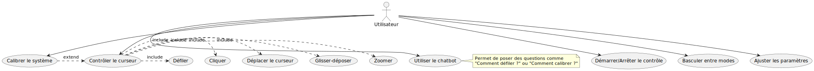
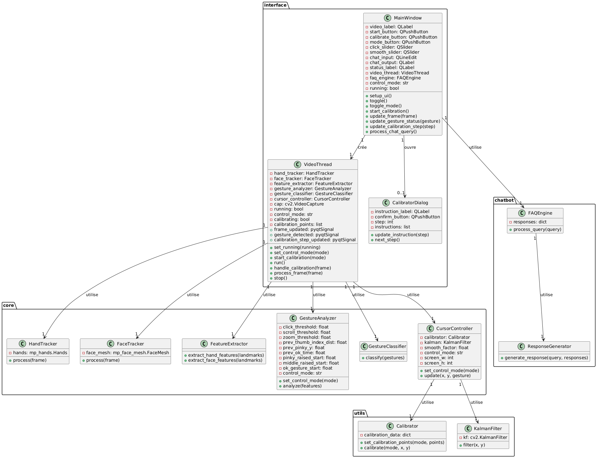
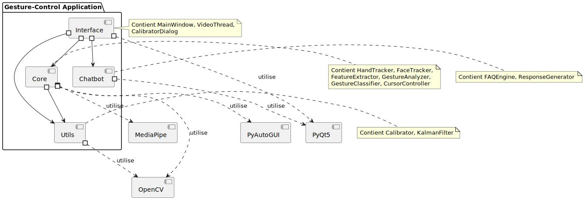
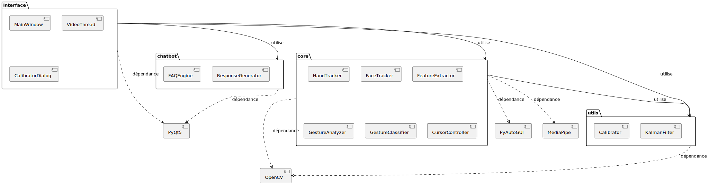
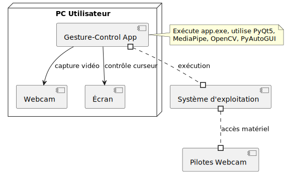
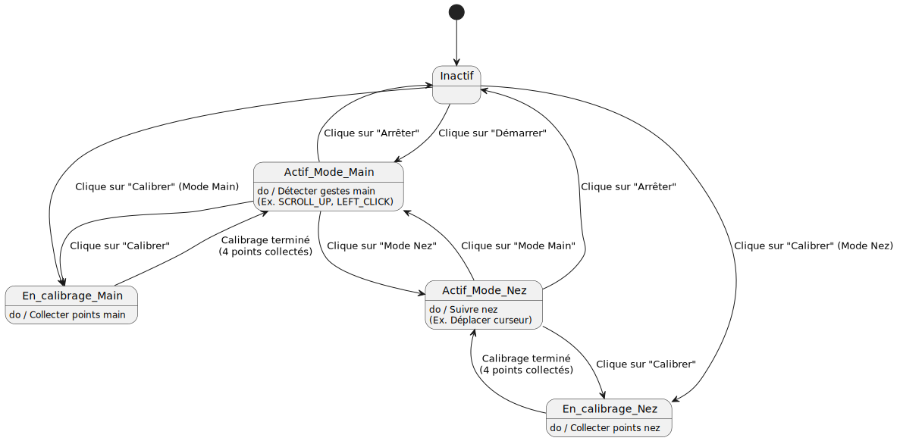
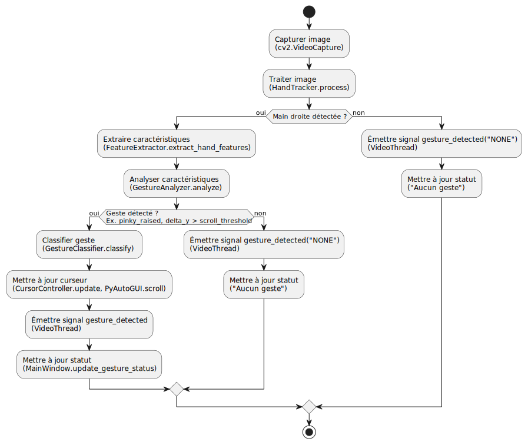
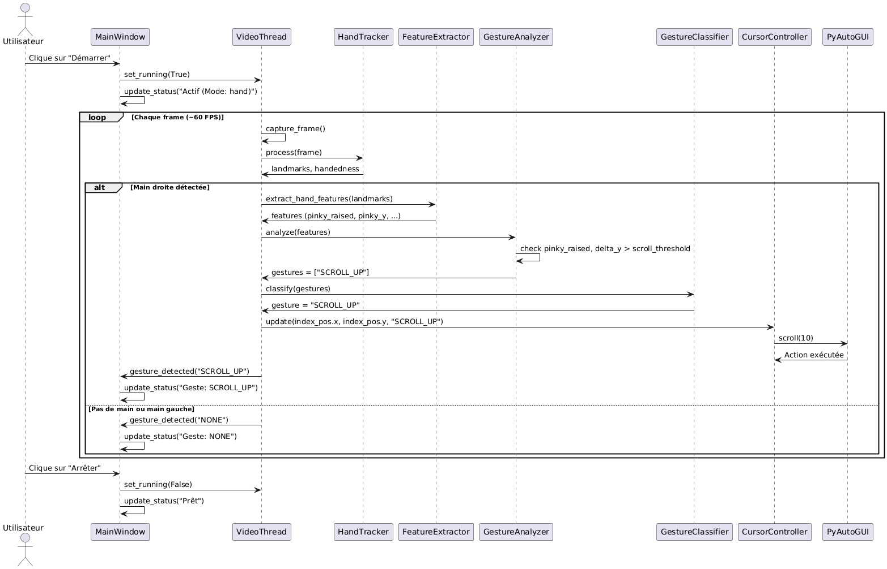

Ce document présente la modélisation complète du projet Gesture-Control, incluant l'architecture, les diagrammes UML, et les flux de données.
Le diagramme suivant montre les interactions entre l'utilisateur et le système.
Le diagramme suivant montre les classes principales, leurs attributs, méthodes, et relations.
Le diagramme suivant montre les composants logiciels et leurs dépendances.
Le diagramme suivant organise les classes en packages et montre les dépendances.
Le diagramme suivant décrit l'architecture physique du système.
Le diagramme suivant montre les états du système et les transitions.
Le diagramme suivant détaille le flux de travail pour reconnaître un geste (ex. SCROLL_UP).
Le diagramme suivant illustre le processus de reconnaissance d'un geste de défilement (SCROLL_UP).
Le projet est organisé en modules :